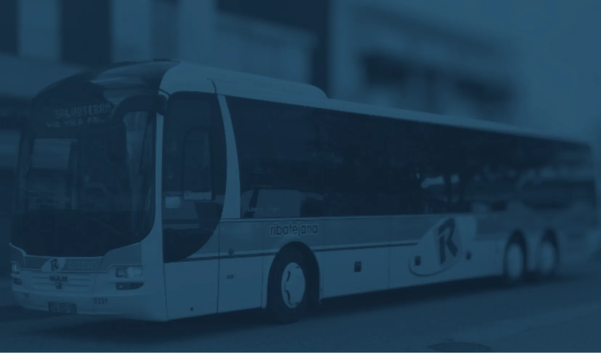

A nossa missão
Criar soluções tecnológicas que tornem a vida das pessoas mais simples, eficiente e conectada.
Com o BussTrack, podes acompanhar a localização dos autocarros em tempo real e planear melhor as tuas deslocações.

Sobre nós
A PrimeTrack Technologies é uma empresa tecnológica focada no desenvolvimento de soluções digitais inovadoras para melhorar o dia a dia das pessoas.
Através da tecnologia, procuramos desenvolver soluções simples, modernas e acessíveis para resolver problemas reais da sociedade.
Criar soluções tecnológicas que tornem a vida das pessoas mais simples, eficiente e conectada.
Construir um futuro onde a tecnologia ajuda as pessoas a tomar melhores decisões no seu dia a dia.
O nosso produto
O BussTrack é uma aplicação móvel que permite aos utilizadores acompanhar a localização dos autocarros em tempo real através de um mapa interativo.
Atualmente, muitas pessoas são obrigadas a esperar longos períodos nas paragens sem saber exatamente quando o autocarro irá chegar. Um problema diário que afeta milhares de utilizadores.
Como funciona
Começar a usar o BussTrack é fácil e intuitivo.
Em poucos segundos tens toda a informação que precisas.
O utilizador abre o BussTrack no seu dispositivo móvel. Interface simples e intuitiva, disponível em qualquer smartphone.
O utilizador vê os autocarros e as suas localizações atualizadas em tempo real no mapa interativo.
Com essa informação, o utilizador decide quando deve sair de casa e dirigir-se à paragem. Sem esperas desnecessárias.
Funcionalidades
Acompanhe a localização dos autocarros através do mapa com atualizações ao segundo.
Consulte os autocarros e as paragens disponíveis de forma visual e intuitiva.
Veja os percursos completos realizados pelos autocarros e planeie melhor.
Evite chegar demasiado cedo à paragem e esperar desnecessariamente.
Receba alertas quando o autocarro se aproxima da sua paragem.
Consulte as suas deslocações anteriores e padrões de utilização.
Planos
Começa gratuitamente e passa para o Premium quando
quiseres desbloquear toda a experiência BussTrack.
0€/Mês
Para quem quer experimentar o BussTrack.
2,99€/Mês
Para quem quer a experiência completa.
Tecnologia
O BussTrack utiliza um conjunto de tecnologias pensadas para oferecer a melhor experiência possível.
Estrutura do site e da aplicação
Design e aparência visual
Interatividade e dinamismo
Armazenamento de informação
Visualização das localizações
Localização dos autocarros
Contactos
Estamos disponíveis para responder às suas questões e receber sugestões sobre o BussTrack.
Portugal PT
Em breve disponibilizaremos todos os nossos canais oficiais de contacto.